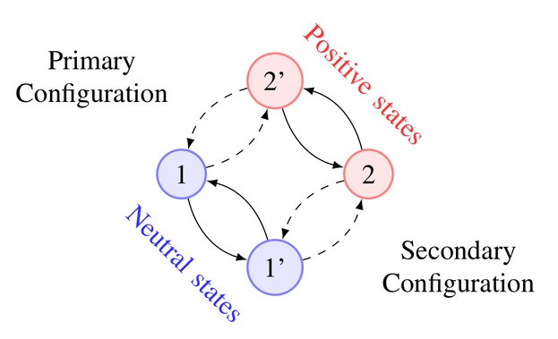

The models implemented in RASI are used to described interactions between the carrier gas in semiconductor devices and point defects. The intended field of application for the package is the research of reliability topics such as the Bias-Temperature Instability and related degradation phenomena. The defect models implemented in RASI describe multi-state defects which exchange carriers with the semiconductor device through multi-phonon transitions [MREL2012].
Defects in the multi-state multi-phonon model can exist in two different charge states and two different configurations (internal states). The degradation and recovery transients observed in BTS-experiments are understood as an ensemble response of these multi-state defects [SISPAD2013].
Transitions between the internal states are understood as barrier hopping transitions and modeled using a simple Arrhenius law
where \(k_{ij}\) is the hopping rate from state i to j, \(\nu\) is the attempt frequency, and \(E_{ij}\) is the barrier for going from state i to j. Transitions involving a change of the charge state are understood as thermally activated carrier trapping events and described in the framework of non-radiative multi-phonon transitions.
The exchange of charge between the defect and the rest of the device is modeled in the framework of the multi-phonon transition theory. Central to this theory is the concept of line shape functions, which can be understood as a capture cross section that depends on the carrier energy, temperature and the electric fields in the device [SISPAD2013].
| [MREL2012] | T. Grasser: “Stochastic Charge Trapping in Oxides: From Random Telegraph Noise to Bias Temperature Instabilities”; Microelectronics Reliability, 52 (invited) (2012), 39 - 70 |